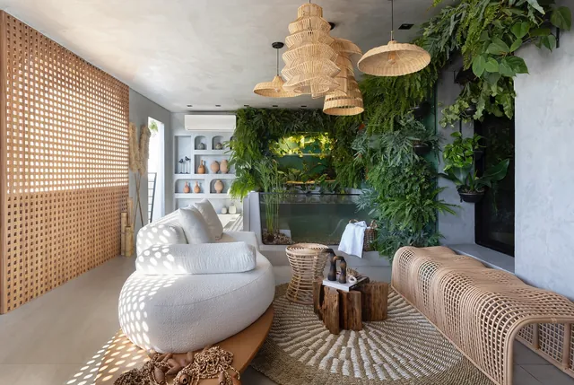
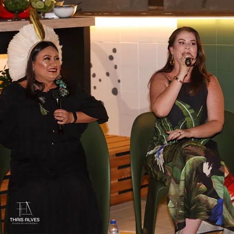
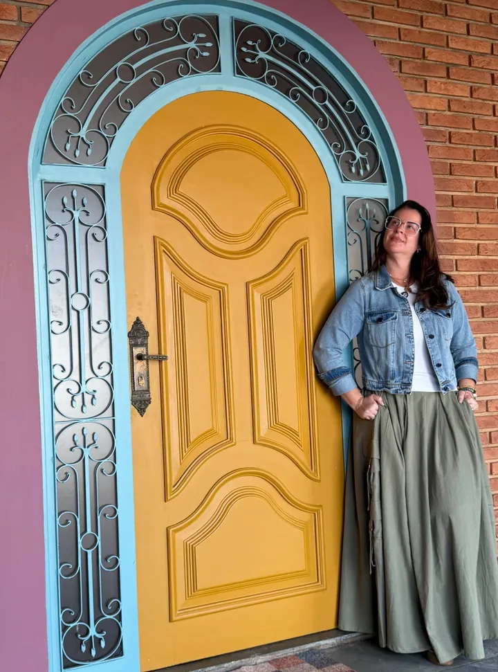
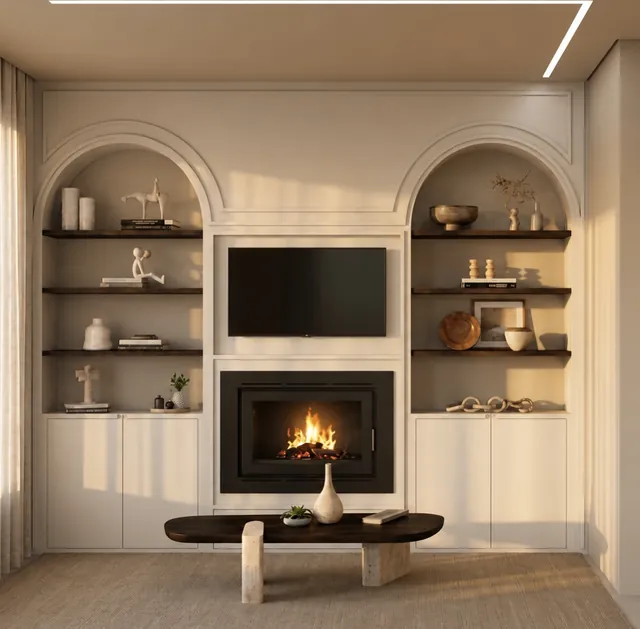
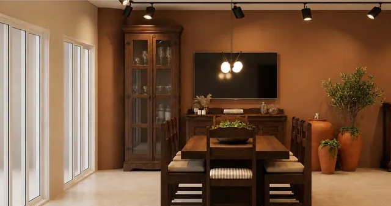

Projetos que começam pelo que você já tem
Design de interiores por Thaís Alves, em Cravinhos. Reformas pensadas para a rotina da sua família, preservando o que faz da casa um lar.




CASACOR Ribeirão Preto 2023 e a Casa Essenza. Fotos da CASACOR: nome do fotógrafo

A casa onde eu cresci
A Casa Essenza é a casa da minha infância, onde vivi momentos importantes e onde tantas memórias da minha família foram construídas.
Reformá-la nunca poderia significar começar do zero. Preservamos elementos, móveis e detalhes que carregam histórias, e transformamos a casa em um espaço de criação e pertencimento.
Inauguração: data a confirmar. Endereço: a confirmar.


Projetos
Cada projeto parte da rotina de quem mora e do que já existe na casa.

Refúgio da Chef Indígena
Ver o projeto
AP Kairós
Ver o projeto
Gourmet com história
Ver o projetoPrêmios do Refúgio na CASACOR 2023: quais prêmios e de quem
Como trabalhamos
-
Conversa
Entendemos a rotina da família, o que incomoda hoje e o que já existe e merece ficar.
-
Projeto
Definimos layout, materiais e iluminação, com imagens em 3D para você ver o ambiente antes da obra.
-
Obra
Acompanhamos a execução junto aos fornecedores e prestadores de serviço.
-
Entrega
Cuidamos dos últimos detalhes para que cada ambiente fique pronto para o dia a dia.
Etapas a confirmar com a Thaís (e se há consultoria avulsa).
Como você quer se sentir em casa?
Três perguntas rápidas. No fim, a mensagem fica pronta para você enviar pelo WhatsApp.
Venha conhecer a Casa Essenza
WhatsApp (16) 99157-6926- @thaisalves_interiores e @acasa.essenza
- Endereço
- rua, número e bairro, Cravinhos, SP
- Atendimento
- dias e horários
O mapa entra aqui quando o endereço da Casa Essenza estiver confirmado.